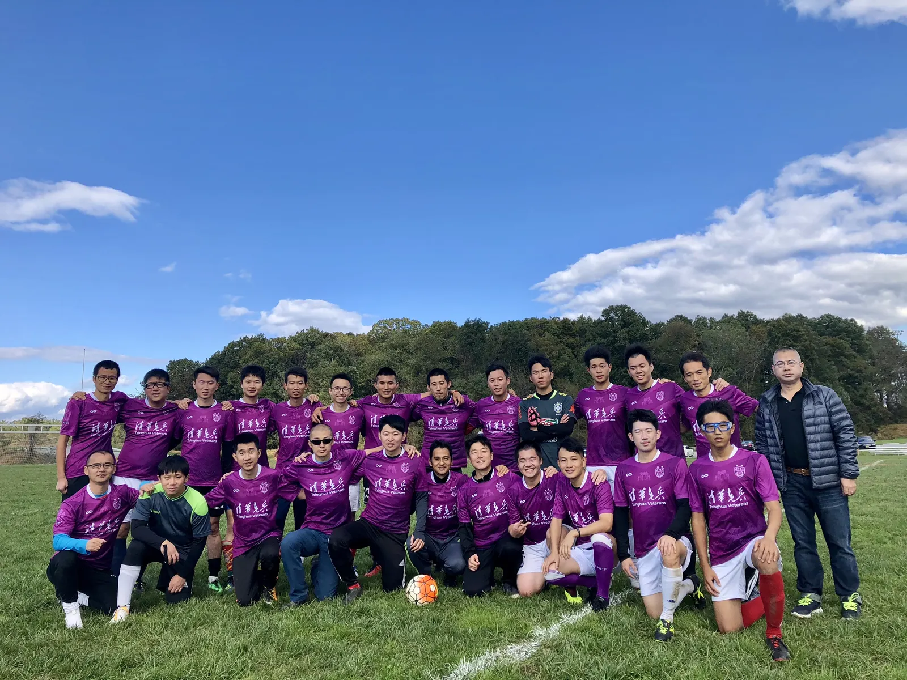
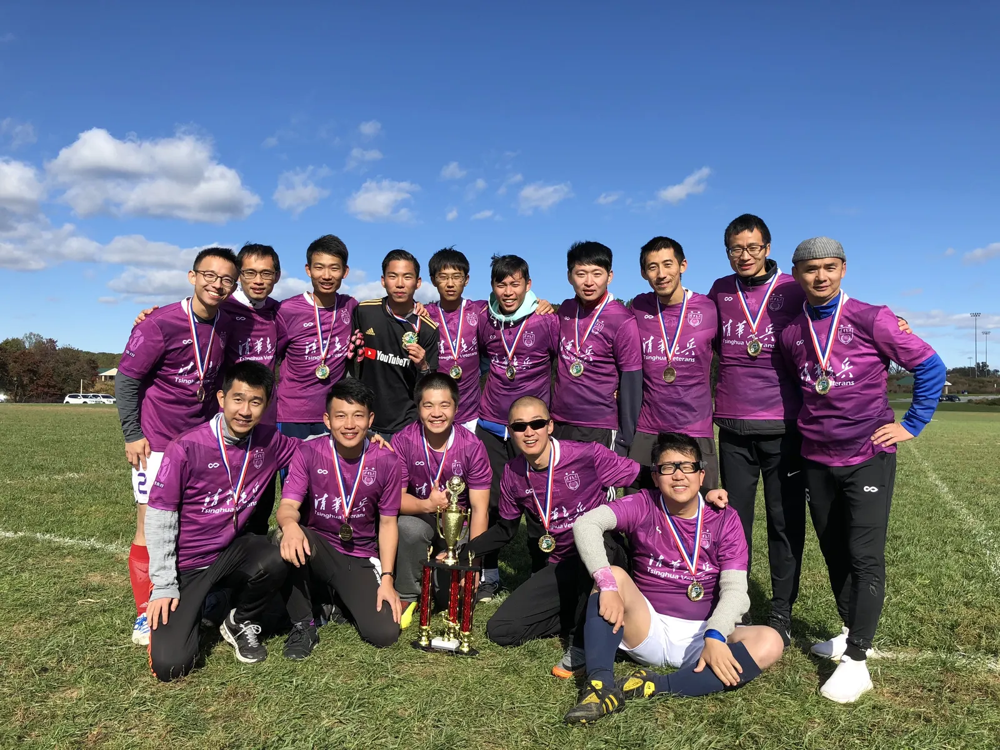
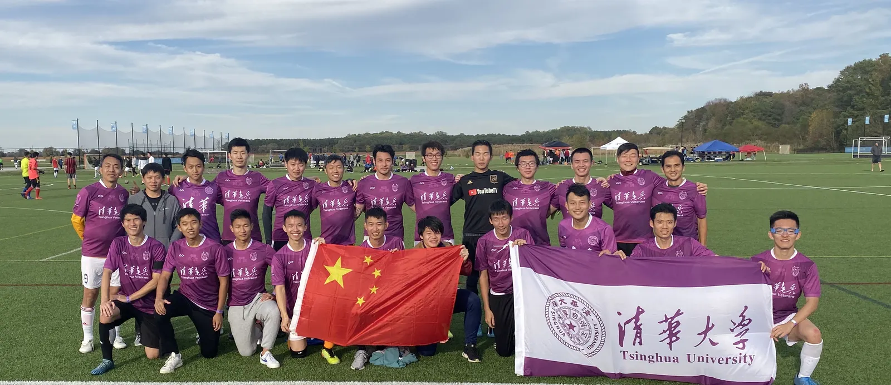
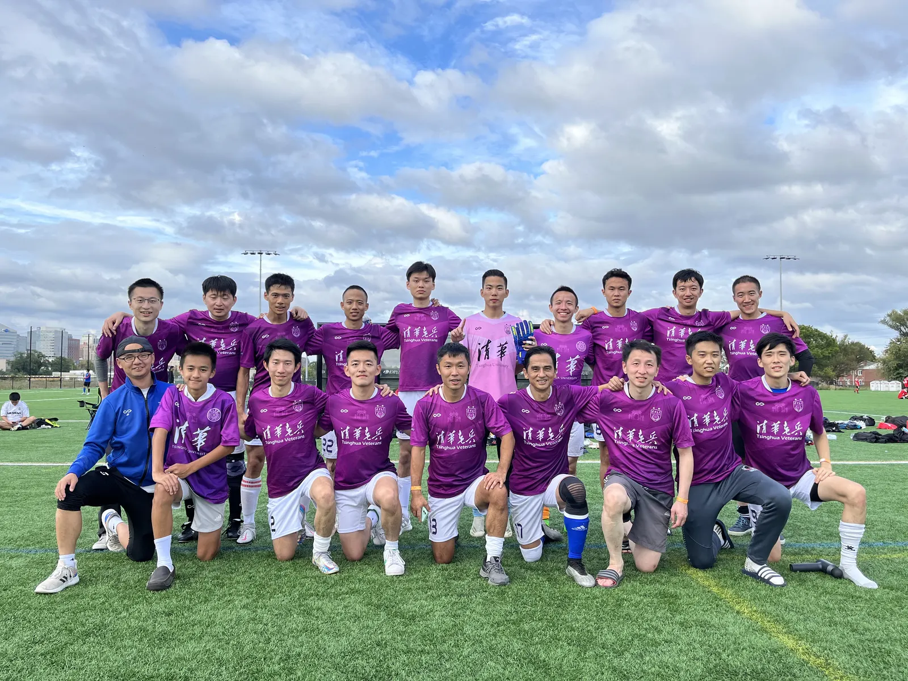
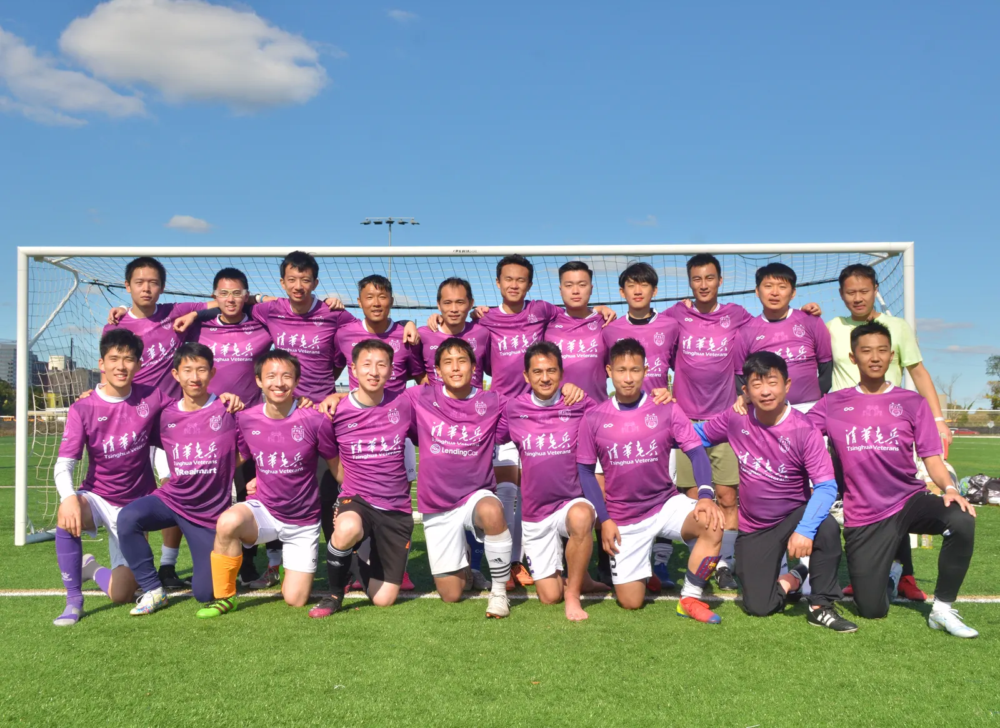
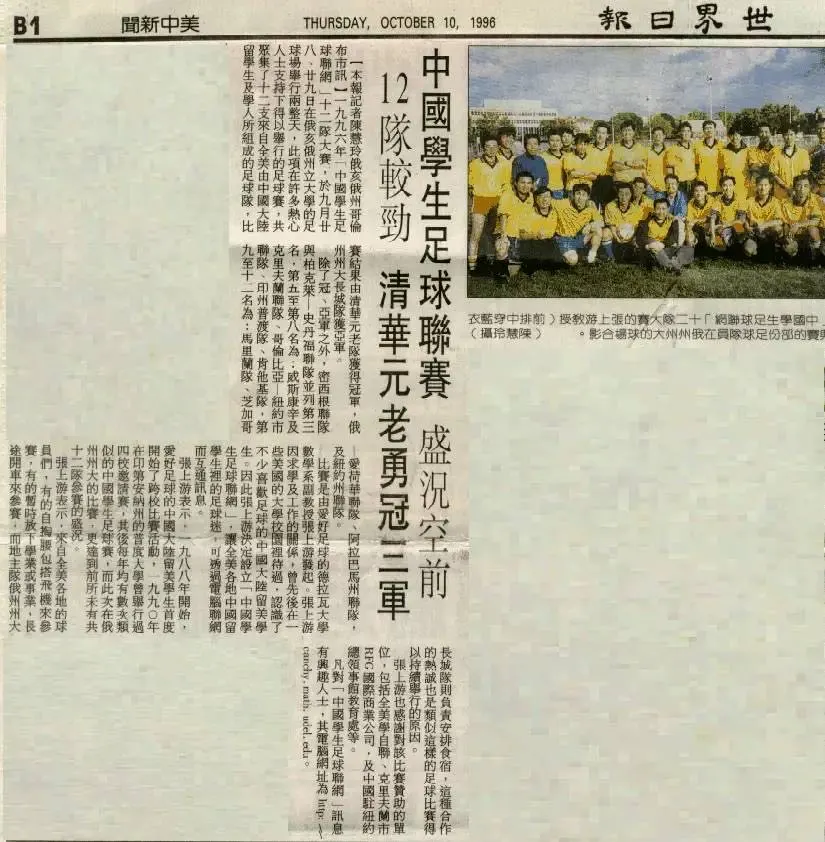

THV
清华老兵
三十周年
第十一届北美中国高校校友杯
唯一同时派出公开组与 40+ 组双队出征的球队。
比赛日期10 月 17 — 18 日2026年 · 10月 · 特拉华州
比赛地点Kirkwood Soccer ComplexFields #8 & #9 · New Castle, DE
公开组小组赛10月17日 · Field #809:40 清华老兵 vs UPenn
16:20 清华老兵 vs 哥大 Columbia
16:20 清华老兵 vs 哥大 Columbia
40+ 组小组赛10月17日 · Field #909:40 清华 40+ vs 费城联队 40+
16:20 清华 40+ vs UD 40+
16:20 清华 40+ vs UD 40+
自强不息 厚德载物30TH ANNIVERSARY
老兵的故事
1996 年，一群在北美求学的清华人，把校友情谊和清华园里的足球记忆带到异乡，组建了清华老兵。此后，队员们持续活跃在北美各地的联赛、校友赛事与日常训练中，在绿茵场上延续彼此的默契。
早期队员陈卫曾写道，清华足球“伴我一生”。这份热爱也在北美延续：清华老兵先后获得 1996、1997 年北美华人足球赛冠军；数代队员接力，2017 年再捧北美校友杯。
三十年里，球队始终以球会友，也把“无体育，不清华”的传统带向远方。2026 年，我们首次同时派出公开组与 40+ 两支队伍出征——仍是同一支老兵队，仍在生长。
TEAM ARCHIVE
老兵合影册






01 / 09
CONTACT
联系老兵
欢迎赛事交流、加入球队，以及企业赞助与个人支持。愿与我们并肩出征，或为清华老兵的下一程助力，欢迎来信洽谈。